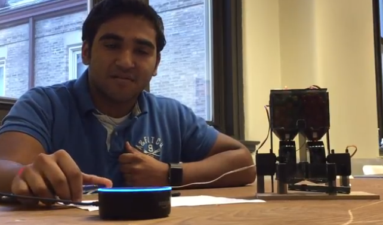

Research
High-Capacity 3D Compressive Sensing Imaging

At Northeastern University, I perform research under Dr. Jose Angel Martinez-Lorenzo at the Sensing, Imaging, Control and Actuation(SICA) laboratory in High-Capacity 3D Compressive Sensing Imaging. The aim of this project is
to develop the theoretical/experimental framework for obtaining video frame rate millimeter wave images. My role in this project has ranged from implementation of low level hardware controls for the array all the way up
to designing algorithms for image reconstruction.
Visual Navigation

The visual navigation project was my final project in Robotics Sensing and Navigation that applied computer vision to localize a robot in urban outdoor settings. This algorithm worked by placing a visible wavelength camera with a view of the horizon of
the enviorment and using the horizon line as a unique identifier for the location. Another part of this project was testing the use of an IR camera to evaluate its performance on localization using the same algorithm as
the above.
Lightfield Imaging
At Northeastern University, I perform research under Dr. Hanumant Singh in robotics light field imaging. This project is a collaboration between Northeastern University and Massachusetts Institute of Technology. The goal of this project is to apply light
field imaging to robotics in areas where clear spatial information if important. An example of this would be lane detection where having clear views on the lane markers is important to the performance of the algorithm on
detection.
Solar Flare Detection

My Solar Flare Detection project was a project using the Stanford Solar Science center’s Sudden Ionospheric Disturbance(SID) instrument to detect solar flares in real time. For this instrument, I designed a custom loop antenna to hook up to which was
then amplified by the SID instrument and digitized by a computer sound card. The principle behind this system is it measured very low frequency signal(VLF) propagation over time. Since, flares cause the ionosphere to become
more reflective VLF signal strength increases. Hence, I designed an end to end system to detect this increase and notify when flares occur. This project resulted in me being a finalist at the International Science and Engineering
Fair, the Junior Humanities Symposium and publishing an article on these results in the United Nations Space Weather Journal.
CERN Research
High Resolution Tile-Calorimeter Imaging
At CERN, I was a University of Michigan fellow working under Dr. Tancredi Carli (CERN ATLAS Director of Physics) on the tile calorimeter project. My work on the tile calorimeter involved increasing the image resolution of the current detector by replacing
the current single sensor readout with a multi sensor readout. This involved the development of various 3D printed light spreaders to properly map the fiber light sources to the sensor, creation of signal processing algorithms
for the multi sensor readout and development of characterization methods for these sensors.
Hackathons
Make Columbia University: Pong over Laser Link
One recent article in Popular Science that interested our hackathon team was about a system known as a LIFI(Light Fidelity) network(100x faster than wifi), which allows for full duplex communication. Based on this idea, our team decided it was feasible
to develop a small scale prototype of a LIFI network. This is how the idea to develop Pong Over Laser Link came to be. Our team wanted to develop the above network with a fun twist of gaming to test out the characteristics
of the LIFI band. Implementing a video game added the challenge of minimizing processing delays and keeping the system as close to real time as possible.
University of Pennsylvania Hacks: Pharma

At University of Pennsylvania our team won best health hack and most innovative embedded hack for Pharma. Pharma makes home medicine much more accessible to the elderly, those with disabilities, and the illiterate. Pharma brings pharmaceutical information
over voice control to the user's Amazon Echo device. Users can ask Alexa how many pills are left in their prescription and learn about the specifics of and side effects of medications they are taking, along with many other
functions.
Outreach
STEM Outreach
Since high school, I have always tried to give back to the engineering community. In an effort to achieve this I have volunteered at multiple STEM outreach events to assist students. One event I participate in is Splash, a day where high school students
come to Northeastern University over the weekend to take classes. My part in this event was I taught classes in Arduino and digital logic design. Another event that I participate in is Friday field trips for high school
students to visit Northeastern. The basics behind this event is students come to Northeastern and participate in fun scientific activities. My role in this event is I assist student in the activities and have given demonstrations
on my research at Northeastern.
Boston Marathon
For the past 2 years I have volunteered at the Boston Marathon on the communication teams. My first year I was positioned at the finish line working with the Boston police department to effectively manage traffic between race buses, pedestrians and ambulances.
For my second year at the marathon I was positioned on the sweeps team at the finish line. My role in the sweeps team involved requesting emergency assistance for any collapsed runners and dealing with other tactical communications.
Proposals
Eagle Scout

As a boy scout to become an eagle scout I performed a leadership project. For this leadership project, I had to raise funds for the project, acquire materials for the project and successfully lead a group of scouts to accomplish the project. My project
looked to incorporate the International Baccalaureate theme to our school by adding in a tranquil path with the IB learner traits. Altogether I was sucessfully able to execute this project and received my eagle scout on
June 22nd 2013.
MIT Inventeam Proposal

One project that I lead while in high school was the development of a proposal for the MIT Inventeam competition. The scope of the project that our team choose to focus on was wrong way driving detection. The principle behind how this would function is
a computer vision algorithm could be used to determine wrong way driving from motion flow of other cars, lane boundaries and other features. Attached you can see the long form proposal that I lead the team through from
brainstorming ideas to creating a product design document.